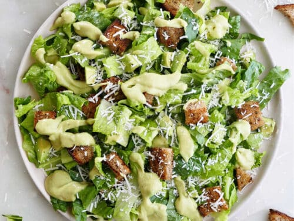

Here's a recipe for Caesar salad!
A Caesar salad is a classic dish in Western cuisine, typically served as an appetizer or a light meal. It originated in Tijuana, Mexico, in the 1920s, created by Caesar Cardini, an Italian chef. The salad consists of romaine lettuce, croutons (cubed and toasted bread), Parmesan cheese, and a dressing made from olive oil, lemon juice, egg, Worcestershire sauce, garlic, Dijon mustard, salt, and pepper. Sometimes anchovies are also included in the dressing or as a garnish. The salad is often tossed together tableside for a theatrical presentation, and it's known for its tangy, savory flavor and crunchy texture. It's a popular dish in many restaurants and is often enjoyed as a refreshing and satisfying option.